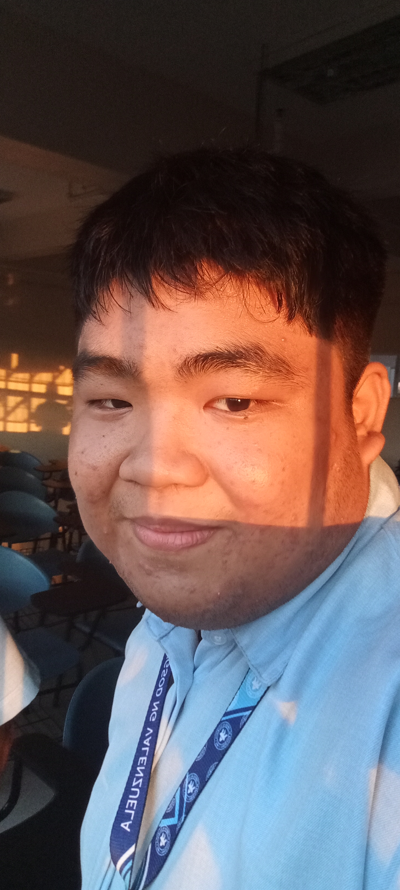

Hello, I'm Parajas, Vincent Hanniel but you can also call me "Pogi" for short. I am 19 years old for now, but my birthday is on December 12, 2005. The world trembles as the chosen one emerges, born into this very world. His parents named him Hanniel, but the people call him Pogi. Hanniel stands on the land of mortals as the one who will change and overthrow the reek of evil in his own world. But something, somewhere out there, will be the key to the last piece of the puzzle to fulfill his dream as he grows older.
The dreams I hope to grasp are still not beyond my reach. I strive and face many hardships. Still, they are far away, but someday, somewhere, there will be a time for me to step on the pedestal beyond humanity itself and beyond the limits of my own flesh.
In the course of my life up until the present, I have met several people. Some helped me on my journey, some changed my mindset, and others became contributors to what I am today: an unemployed, jobless, fat, irregular student waiting for luck to come visit me. But don't worry — I believe in the quote "work smart, not harder" — and thus was born the ultimate laziness you will ever witness in your entire life.
Life begins when we are born and ends when we die — as simple as that. But think about it: in the span of our lifetime, what can we do to contribute to humanity and the world? Everyone is bound by the shackles of standards, norms, laws, etc. What if we step out of our boundaries and become the hope of humankind, making a change that will tremble the global system as we know it today — a change that only me, you, and we can do for the sake of the past, present, and future?
I have met so many people, and some became my friends. One of them was back when I was in 6th grade — we had a circle that always talked about our interests and embraced our hobbies. In 9th grade, I met my long-time friends. We went through many hardships. We became enemies, but still, the friendship was never broken. We had arguments sometimes, but we understood each other. Even up until now, we’re still connected, even if it's not the same as the past due to different courses. We are still friends, as long as we know each other.